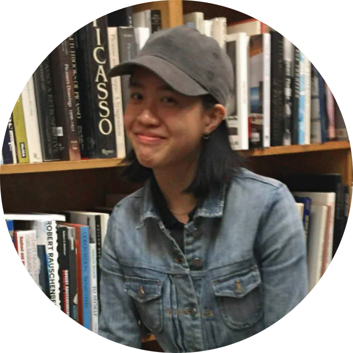
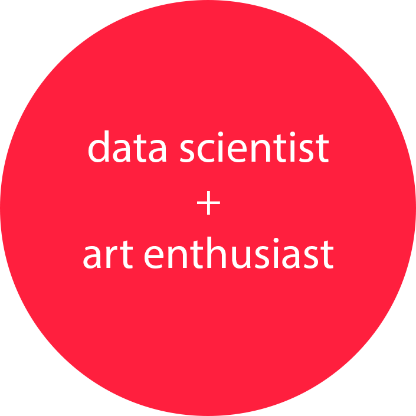

|


|
I'm a Computer Science and Creative Writing student at the University of Chicago. |
| Projects | Writing | Drop me a line |
|---|---|---|
| Data Science Education Module | National Silver Key Award | wongamanda@uchicago.edu |
| UCB Library Student Council | Goldsher Award | |
| Voteworthy.org | Writing Portfolio | Spotify |
| bGlass |